Postup jako u Starých Splavů: nejdřív klasické video na Sreality (na šířku, s komentářem) a svislý master, z čistých masterů pak tři reklamy A, B, C ve formátech 16:9, 9:16 a 1:1, bannery, POI z dronu a 3D koláč. Web ani mikrosajt neděláme, reklamy vedou na stávající resortvinohrady.cz. Fakta níže jsou převzatá z resortvinohrady.cz, PDF o správě pronájmu a webu Usedlosti.
● nic se negenerovalo · čekám na tvoje fotky, drony a FPV
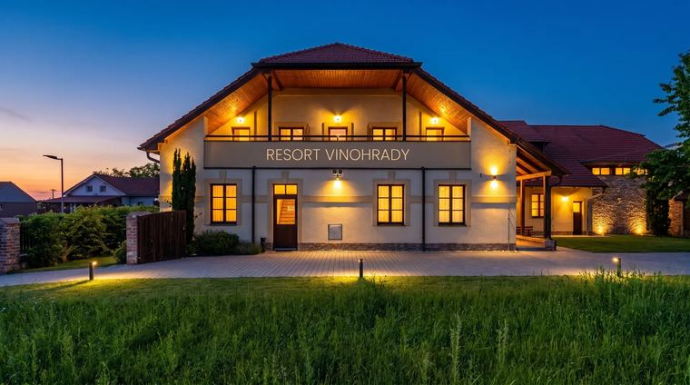
01 · Ověřená fakta
Projekt v kostce
Rekonstrukce fungujícího Penzionu Usedlost pod vinohrady (otevřen 2008, 14 let od kolaudace) na aparthotel. Prodej běží v neveřejném předprodeji přes přístupový kód.
16 apartmánů2 budovy (A, B), 20,5–43,4 m², kapacita 54 osob
2 818 750 Kčnejnižší cena vč. DPH (A.11), nejvyšší 6 207 500 Kč; 130–137 500 Kč/m²
Q4 2027předání a otevření; zápis do KN Q1 2027
12 volných4 jednotky v ústní rezervaci: A.11, A.12, A.24, B.21
Resort a služby
Vnitřní bazén v budově A, prosklené stěny do zahrady
Wellness ~60 m² v budově B: sauna (finská i parní), vířivka, odpočívárna
Restaurace 132,3 m² (snídaně a večeře, přes den samoobsluha)
Vinárna 76,7 m², otevřené degustace s hlohoveckými vinaři každý pátek a sobotu
Zahrada s hřištěm mezi A a B, louka za B na piknik a kolektivní sporty
Standard na klíč ve dvou atmosférách BLACK / WHITE, parkovací místo 250 000 Kč vč. DPH
Lokalita (časy z webu)
Valtice
3,9 km · 6 min
Lednice
5,1 km · 6 min
Mikulov
12 km · 18 min
Břeclav
9 km · železniční uzel
Brno
64 km · 51 min
Vídeň
90 km · cca hodina
Bratislava
96 km · cca hodina
V katastru
Lednické rybníky vč. Nesytu, Hraniční zámeček
Lednicko-valtický areál (UNESCO), Mikulovská vinařská podoblast, Pálava a Nové Mlýny, Stezka podél Dyje, Stezka železné opony. Časy pro koláč ještě přeměřím (OSRM).
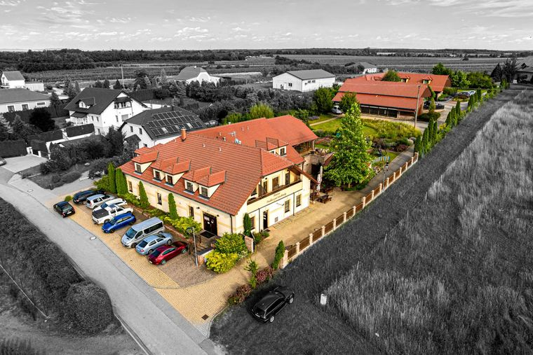
Web: dron den, okolí do ČB, areál barevně. Stejný princip použiju na vyznačení pozemku.
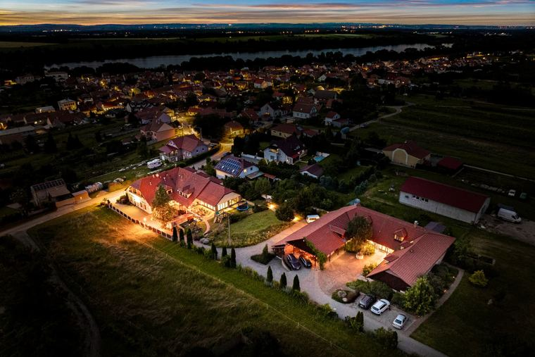
Web: dron noc. Rybník v pozadí se hodí do POI.
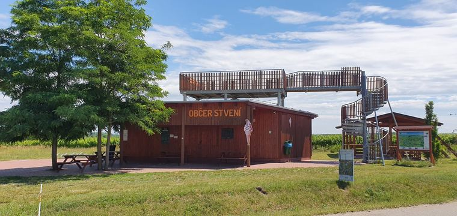
Usedlost: vyhlídka s kioskem ve vinicích. Patří k projektu? (otázka 8)
Lidé za projektem: SFCT HLOHOVEC s.r.o. (RENTIA INVEST) vlastní projekt, RENTIA ESTATE prodává, RENTIA PLACES spravuje pronájem, myRENTIA dělá crowdfunding, rekonstrukci vede PRADOM DEVELOPMENT. Kontakt na kartu: Matěj Staněk (obchod), +420 734 244 919, Vinohrady@rentiagroup.com.
02 · Jak se do projektu vstupuje
Co se komu nabízí a za kolik
Tři cesty, které z webu vycházejí. Na nich stojí tvoje „vlastnit, užívat, vydělávat“ (web to píše jako Vlastnictví · Volnost · Správa) a crowdfunding myRENTIA.
Vlastnit
Koupě celé jednotky
16 jednotek ve 3 typech: studio pro 2, rodinné studio pro 4, rodinný apartmán pro 4 se samostatnou ložnicí
od 2 818 750 Kč vč. DPH, hypotéku pomohou připravit
zápis do katastru Q1 2027, vybavení na klíč
Užívat + vydělávat
Vlastní pobyty a pronájem
vlastní užívání bez omezení počtu dní
když tam majitel není, pronajímá RENTIA PLACES: 70 % čistých tržeb majitelům, 30 % správci
výnosové pooly: Rodinný apartmán (8), Studio (5), Rodinné studio (3); dělí se po dnech
výnos web výslovně negarantuje
Investovat od 500 000 Kč
Crowdfunding myRENTIA
pro ty, kdo nemají na celý apartmán
úrok 6 % p.a. vyplácený každý měsíc
zajištěno zástavou na konkrétní jednotce
po 5 letech podíl na zisku z růstu hodnoty
Výzva k akci (CTA)
Web je v režimu předprodeje. Hlavní tlačítko Získat přednostní přístup pošle přístupový kód e-mailem do neveřejné prezentace (to je Lead v pixelu). Druhá cesta je „Mám přístupový kód“. Reklama tedy nemá prodávat apartmán, ale přístup k neveřejné nabídce. Tlačítko v Meta: Zaregistrovat se.
Modelová čísla z webu
Cena noci v kalkulačce
3 200 / 3 600 / 4 200 / 4 900 Kč podle typu
Obsazenost
volba 40 / 50 / 60 %
Odpočty
Booking 15 %, správa 30 %, provozní náklady
Příklad z PDF
10 000 Kč tržba → 7 500 čistá → 5 250 majitelům
Do reklamy dávám jen „70 % z čistých tržeb majitelům“, žádné procento výnosu.
03 · Z reportu 28. 10.–2. 11.
Co z TEST4 plyne pro kreativu
79 leadů89 Kč za lead, útrata 7 029 Kč
11,3 %web převádí prokliky dobře, slabší je reklama
74 KčBannery 01 a 04; 02 a 03 za 103 a 124 Kč
67 → 167 Kčcena za lead rostla, kreativy se okoukaly
Chybí 9:16 pro Reels a Stories. Proto tři svislá videa a svislé bannery v každém konceptu.
Facebook Feed 84 Kč, Instagram Feed 114 Kč: na FB dávám 4:5 a 1:1, na IG hlavně 9:16.
18–24 bez leadu, nejlevnější 45–54 (77 Kč) a 25–34 (72 Kč). Minimální věk 25. Texty A píšu spíš pro 45+, B pro 25–54, C pro všechny, cílení v testu je ale pro všechny stejné.
Všechny čtyři bannery měly stejný text, rozdíl dělal vizuál. Teď testujeme sdělení (A/B/C) a v každém dva vizuály.
04 · Tři sdělení, stejné cílení a rozpočet
Koncept ABC
Každý koncept má vlastní video ve třech formátech a vlastní bannery. Test 7 dní, stejné publikum (ČR, 25+, Advantage+), měříme cenu za lead a kvalitu leadů v CRM. Každá reklama končí větou „Je to pro vás, pokud…“ a jedním tlačítkem.
A
Vlastnit · Užívat · Vydělávat
Koupě celé jednotky. Tři slova jako tři kapitoly videa. Píšu pro kupce 35–64 s vlastním kapitálem nebo hypotékou.
Hlavní text16 apartmánů v novém RESORT VINOHRADY mezi Lednicí a Valticemi. Užívejte ho, kdy chcete. Když tam nejste, pronájem i provoz za vás zajistí RENTIA PLACES. Je to pro vás, pokud chcete apartmán, který si užijete i pronajmete.
TitulekVlastní apartmán u Lednice a Valtic
Tlačítko → cílZaregistrovat se → přístupový kód
B
Od 500 000 Kč
Crowdfunding myRENTIA. Příběh „fungující penzion, nová etapa“: současný stav z dronu se promění ve vizualizaci. Píšu pro 25–54.
Hlavní textNemáte na celý apartmán? S myRENTIA vstoupíte do RESORT VINOHRADY od 500 000 Kč. Úrok 6 % ročně vyplácený každý měsíc, zajištěno zástavou na konkrétním apartmánu. Je to pro vás, pokud chcete peníze v nemovitosti, kterou můžete navštívit.
TitulekApartmán u Lednice od 500 000 Kč
Tlačítko → cílZaregistrovat se → podklady k investici
C
Místo, které má všechno
Lokalita a život v resortu po celý rok. Nese Seedance s lidmi, drony, koláč a POI. Široké publikum, i lidé, kteří o investici zatím nepřemýšlí.
Hlavní textValtice 6 minut, Lednice 6 minut, Mikulov 18. Vinárna s degustacemi, bazén, wellness a kola přímo v resortu. Je to pro vás, pokud chcete vlastní místo na jižní Moravě, kam se budete rádi vracet.
TitulekApartmán v srdci Lednicko-valtického areálu
Tlačítko → cílZaregistrovat se → přístupový kód
B je finanční nabídka (úrok, zástava). Na Metě ji počítám jako samostatnou kampaň, protože pravděpodobně spadne do zvláštní kategorie finančních služeb s omezeným cílením. Texty s „6 % p.a.“ musí schválit Rentia nebo jejich advokátka a ve videu bude malé upozornění na riziko. U A a C držím pravidlo ze Splavů: v titulcích ve videu žádné „investice / výnos“.
05 · video na Sreality + 9 reklam
Videa a storyboardy
Jako u Splavů: nejdřív klasické video na Sreality (16:9) a svislý master 9:16 z tvých fotek a záběrů na výšku, bez ořezů. Schválíš je a z jejich čistých verzí střihnu reklamy. Krátké verze se už znovu nebarví ani neořezávají. Titulky v reklamách 1,6× větší, štítky VIZUALIZACE a SKUTEČNÝ STAV.
16:9 · YouTube, FB in-stream · 30–40 s9:16 · Reels, Stories · 20–30 s, háček do 1,5 s1:1 · FB a IG Feed · 20–25 sVideo na Sreality 16:9 · cca 1:20Svislý master 9:16 · cca 60 s
Sreality Klasické video do inzerátu · cca 1:20, s komentářem
0:00–0:06
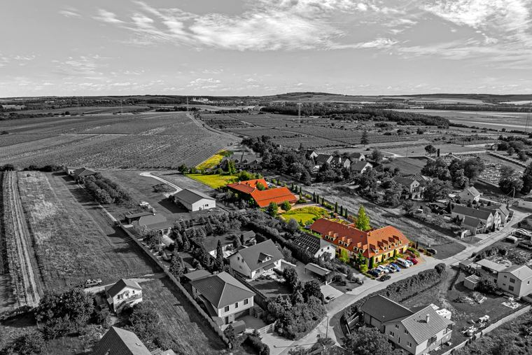
FPV a dron nad vinicemi k resortu„RESORT VINOHRADY · Hlohovec“klidný úvod, bez speed rampu
0:06–0:16
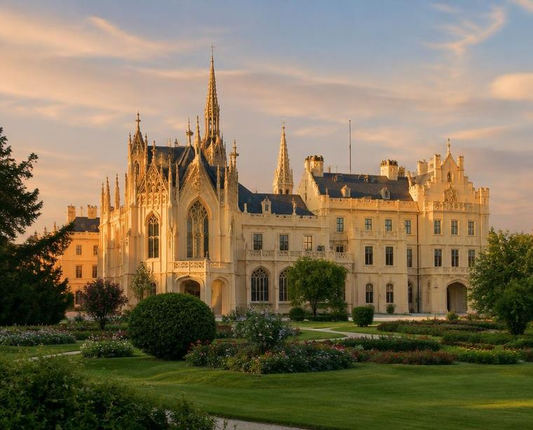
Lokalita: 3D koláč a POIValtice 6 min · Lednice 6 min · Mikulov 18 min · Brno 51 min · Vídeň cca hodina · UNESCOkoláč ze skillu, POI z dronu
0:16–0:24
Areál a pozemekBudova A · Budova B · Zahrada, „Dvě budovy. Jedna zahrada.“kreslený obrys, okolí do ČB
0:24–0:32
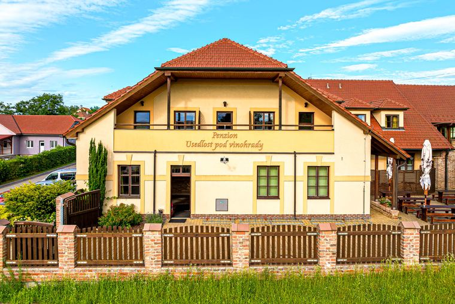
Skutečný stav → vizualizace (P5 fasáda, P4 zahrada)„Fungující penzion od roku 2008 · rekonstrukce 2027“pixelová mozaika, Kling proměna
0:32–0:48
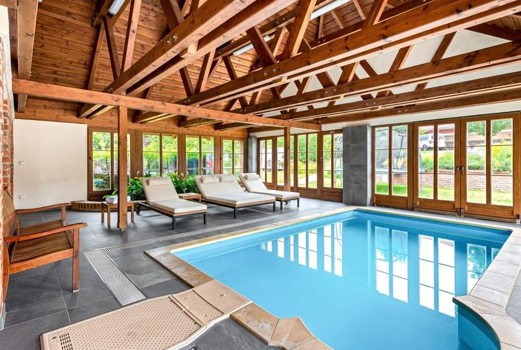
Služby: bazén, wellness, restaurace, vinárna s degustací, kolaštítky s plochami (restaurace 132 m², vinárna 77 m², konference pro 50 lidí)K02, K03, K04, S2, S1
0:48–1:02
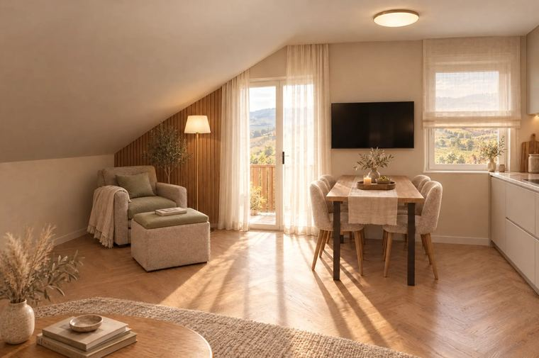
Apartmány„16 apartmánů · 20,5–43,4 m² · vybavené na klíč, BLACK / WHITE“průchod dveřmi P6, K06, K07, S3
1:02–1:12
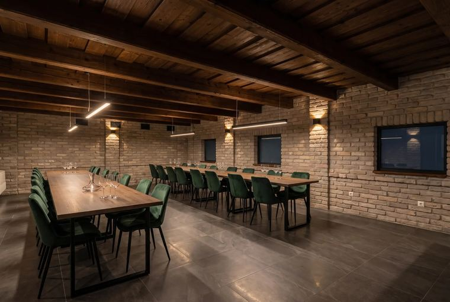
Jak vstoupit: tři cestyKoupit od … Kč · Užívat kdykoli, pronájem RENTIA PLACES 70 / 30 · Crowdfunding od 500 000 Kč, 6 % p.a.očíslované položky
1:12–1:17
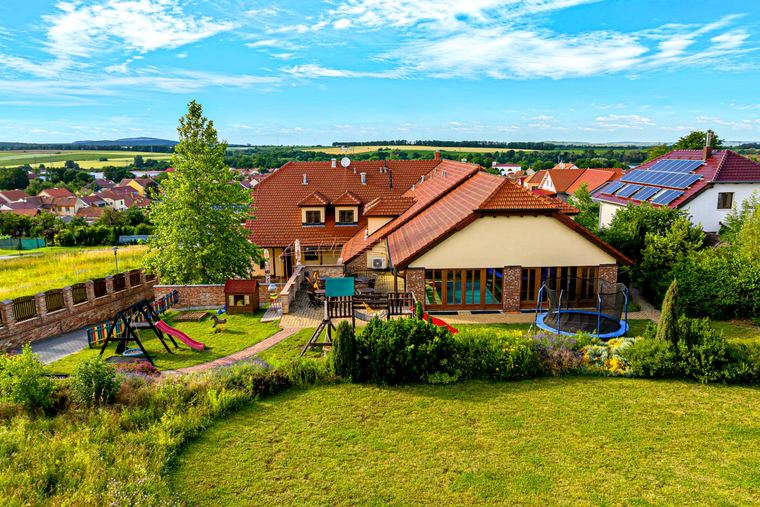
HarmonogramQ1 2027 zápis do KN · Q2 resort · Q3 apartmány · Q4 2027 předáníčasová osa
1:17–1:22
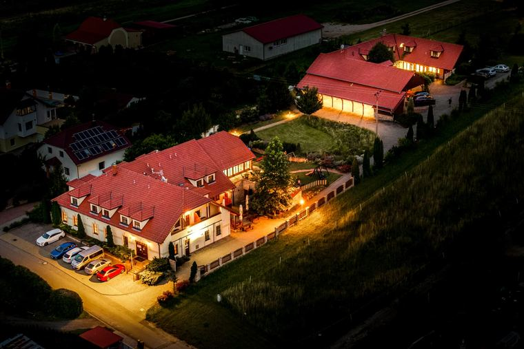
Karta s kontaktemMatěj Staněk · +420 734 244 919 · Vinohrady@rentiagroup.comznělka karty
Na Sreality nemá Meta omezení, takže tu může zaznít „investiční apartmán“ i crowdfunding. Video nepotřebuje další kredity, stačí záběry ze seznamu níže. Doporučuju ale přesunout K05 (vinárna) a K08 (kolárna) z volitelných do základu, +37,5 kr.
A Vlastnit · Užívat · Vydělávat · 30 s
0:00–0:02
FPV nad vinicí, průlet k resortu„Apartmán mezi Lednicí a Valticemi“háček · speed ramp
0:02–0:06
Dron oblet, okolí do ČB, pozemek barevně„Dvě budovy. Jedna zahrada.“ + štítky Budova A, Budova B, Zahradakreslený obrys pozemku · barevná izolace
0:06–0:10
VLASTNIT · fasáda se rozsvítí (Kling K01)„16 apartmánů od 2,8 mil. Kč · zápis do katastru 2027“text za střechou
0:10–0:16
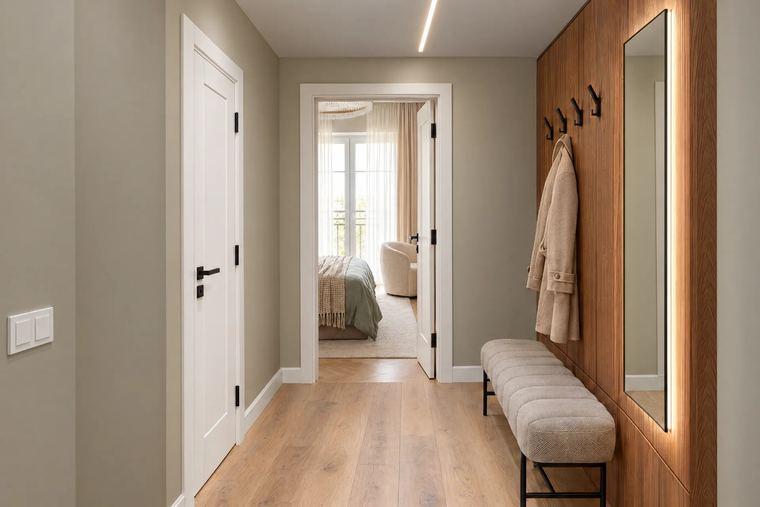
UŽÍVAT · průchod předsíní do ložnice (P6), obývák se sluncem (K06), káva u okna (S3)„Kdykoli. Bez limitu dní.“průchod dveřmi
3D koláč s časyValtice 6 min · Lednice 6 min · Mikulov 18 minkoláč ze skillu
0:27–0:30
Karta„Neveřejná nabídka. Přístupový kód pošleme e-mailem.“ · RESORT VINOHRADY · RENTIAsvětelný přejezd po logu
B Od 500 000 Kč · 30 s
0:00–0:02
Velké číslo přes noční dron„Nemáte na celý apartmán? Od 500 000 Kč.“háček · číslo naskočí na dobu
0:02–0:07
SKUTEČNÝ STAV: fungující penzion → VIZUALIZACE: Resort Vinohrady (P5)„Fungující penzion. Nová etapa 2027.“pixelová mozaika na drop
0:07–0:12
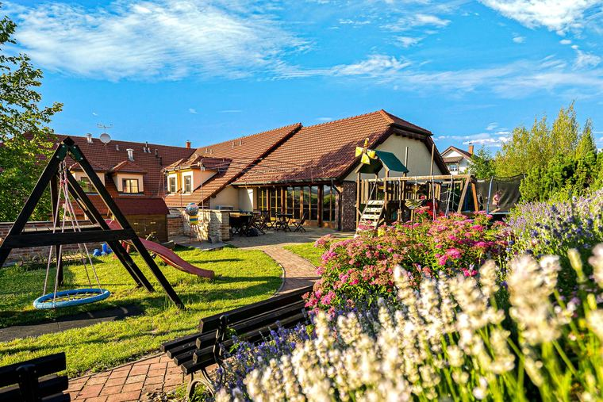
Proměna zahrady (P4), případně bazénu (P1)„Rekonstrukce do hotelového standardu“Kling start/end, kamera stojí
0:12–0:20
Tři kroky přes Kling klipy (K02, K03, K06)1 Zvolíte apartmán · 2 Smlouva · 3 Úrok 6 % p.a. každý měsíc · „Zajištěno zástavou na konkrétním apartmánu“očíslované položky, hraje zelená
0:20–0:25
Dron oblet s obrysem pozemku„Po 5 letech podíl na růstu hodnoty“kreslený obrys
0:25–0:30
Karta myRENTIA„Podklady k investici pošleme e-mailem.“ + malé upozornění na rizikosvětelný přejezd
C Místo, které má všechno · 35 s
0:00–0:03
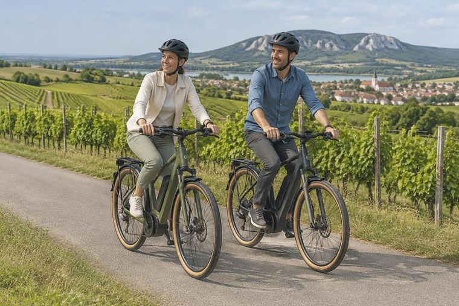
Pár na elektrokolech, za nimi Pálava (S1)„Mezi Lednicí a Valticemi“háček · kamera couvá před koly
0:03–0:09
3D koláč, zoom z Brna, Vídně a Bratislavy na HlohovecBrno 51 min · Vídeň a Bratislava cca hodina · Valtice 6 minmapový nálet
0:09–0:14
POI z dronuResort s pozemkem, Valtice, Lednice, Hraniční zámeček, rybníky, Pálavaštítky s vodicí čarou
0:14–0:26
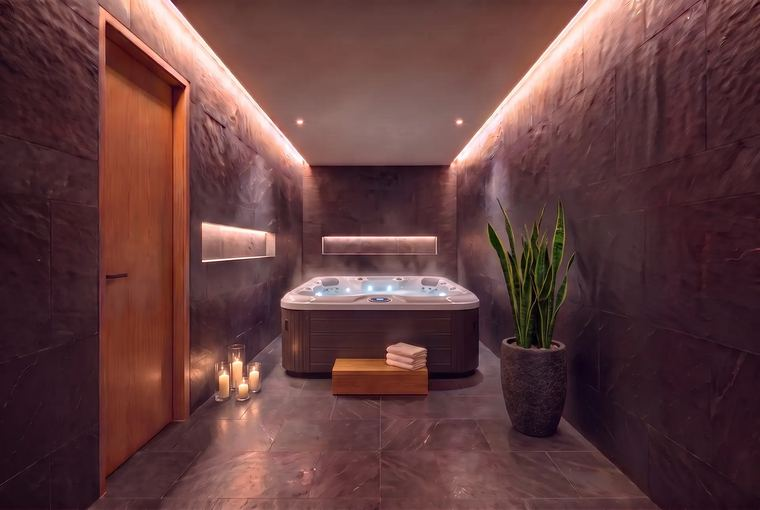
Roční období: jaro kola, léto bazén, podzim degustace, zima sauna a vířivka„Důvody přijet v každém ročním období“sezónní stíračka se štítkem období
0:26–0:31
Interiér apartmánu se sluncem (K06)„A když tam nejste, apartmán se pronajímá.“průlet oknem ven na vinici
0:31–0:35
Karta„Získejte přednostní přístup k neveřejné nabídce.“světelný přejezd
Na výšku stavím primárně z tvých svislých fotek a záběrů. Kde svislý materiál chybí, použiju úpravu „na třetiny“ ze Splavů (nahoře grafika s položkami, pod ní dvě čisté šířky) a pro vybrané vizualizace z webu nechám Kling generovat rovnou 9:16. Čtverec 1:1 beru ze středu 16:9 masteru (1080 px na výšku, bez ztráty).
06 · Kling 4.0 · 1080p · 3,75 kr/s
Rozpohybování vizualizací z webu
Kamera pomalu, nic se nepřestavuje, bez lidí a textu. Prompty začínají „keep every wall, window, beam and furniture exactly as in the image“. Kling vrací 24 fps, před střihem převod na 25p a kontrola mezer.
K01AB
Fasáda: pomalý nájezd, světla se rozžhaví, tráva se vlní, mraky plují.
16:9 + 9:16 · 2× 5 s · 37,5 kr
K02AC
Bazén: boční jízda podél hladiny, vlnky a odlesky na trámech.
Restaurace: jízda vpřed mezi stoly, slunce z oken.
16:9 · 5 s · 18,75 kr
K06AC
Obývák: sluneční pruhy se posouvají, záclona dýchá, nájezd k oknu s vinicí.
16:9 + 9:16 · 2× 5 s · 37,5 kr
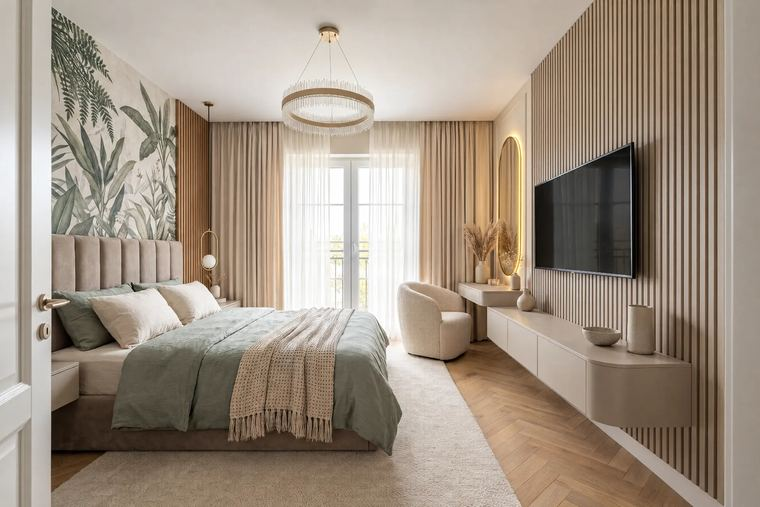
K07A
Ložnice: záclony v průvanu, pomalý oblouk kolem postele.
16:9 · 5 s · 18,75 kr
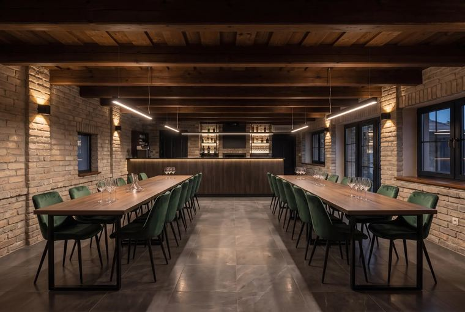
K05volitelné
Vinárna: jízda k baru, závěsná světla.
16:9 · 5 s · 18,75 kr
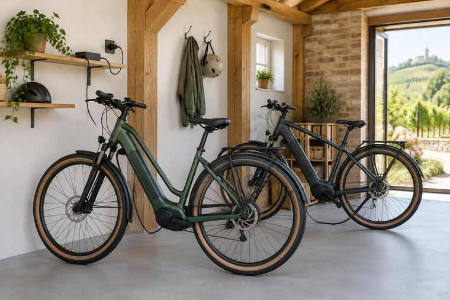
K08volitelné
Kolárna: nájezd k otevřeným dveřím na vinici.
16:9 · 5 s · 18,75 kr
V01–V03: tři klipy 9:16 přímo z tvých svislých fotek (vyberu, až je pošleš). 3× 5 s = 56,25 kr.
07 · Start a end frame
Proměny: skutečný stav → vizualizace
Čtyři vizualizace na webu vznikly přímo z fotek současného stavu se stejnou perspektivou. Kontrola prolnutím 50 % sedí (trámy, okna, kamna). Kling: start = skutečný stav, end = vizualizace, kamera stojí. Tohle je nejsilnější materiál pro koncept B.
P4 · zahrada a hřištěBC5 s · 18,75 kr · exteriér
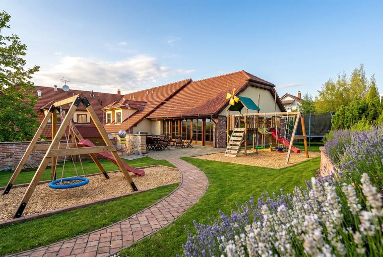
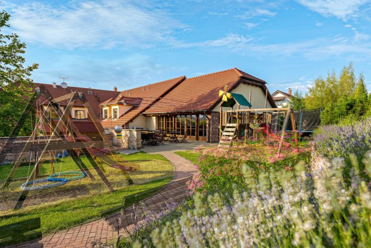
prolnutí 50 %: sedí
P5 · fasáda, den → večer, nový nápisB5 s · 18,75 kr · nutné zarovnat měřítko
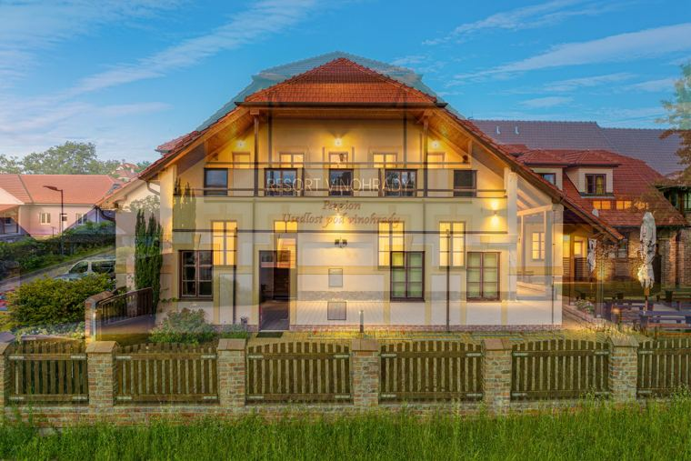
jiný výřez: zarovnám přes matchTemplate, jinak pixelová mozaika místo Klingu
P1 · bazénBinteriér současného stavu5 s · 18,75 kr
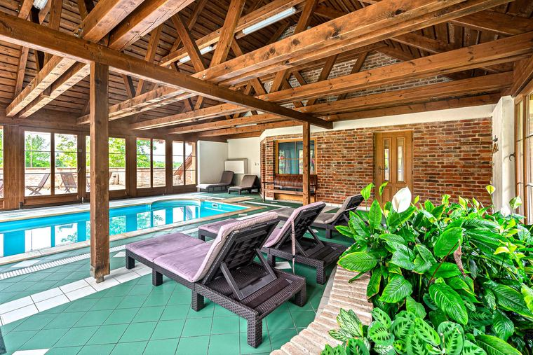
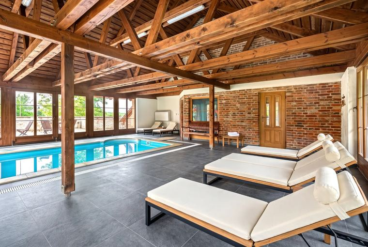
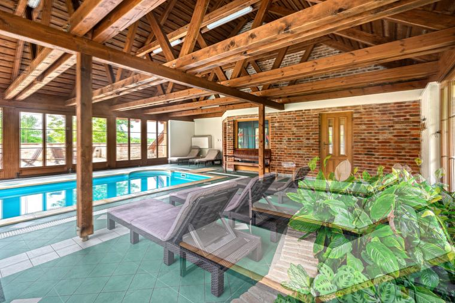
prolnutí 50 %: geometrie sedí, mění se dlažba a lehátka
P2 / P3 · restauraceBinteriér současného stavu1–2× 5 s · 18,75 kr každý
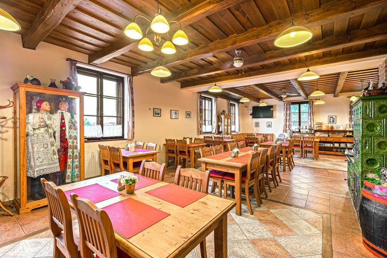
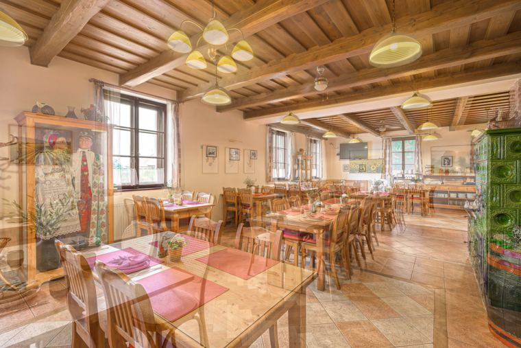
P3 · sedí okna, trámy i zelená kamna; P2 (pohled od baru) taky
P6 · průchod dveřmiA5 s · 18,75 kr
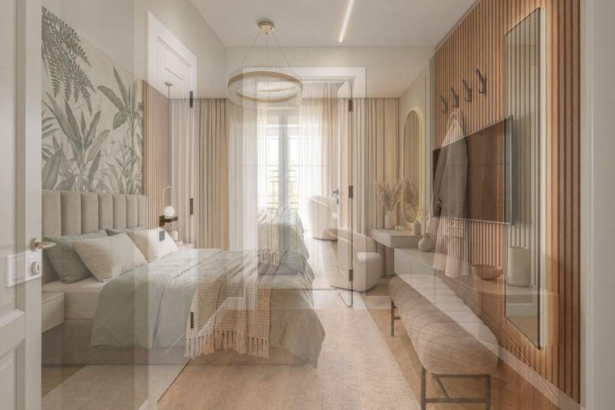
předsíň A.11 má na konci dveře do ložnice: kamera projde dveřmi a skončí v záběru ložnice
Psal jsi „interiéry současného stavu asi ne“. P1 až P3 proto beru jen pokud řekneš ano (otázka 3). Bez nich zůstávají P4, P5 a P6. Navíc P7 a P8: poslední snímek tvého FPV jako start a vizualizace bazénu nebo restaurace jako end, tedy průlet z dronu dovnitř. FPV záběry samotné nezkracuju ani neprodlužuju, Kling jen naváže za ně.
08 · Seedance 2.5 · 1080p · 16 kr/s (720p 7 kr/s)
Lidé ve vizualizacích
Seedance jen tam, kde má být život. Lidé přirození, spíš zezadu, z profilu nebo v neostrosti, nepózují do kamery, žádné detaily dětí. Páry kolem 35–55, neutrální oblečení, pozdní léto. Prostředí zůstává přesně podle vizualizace (start frame).
S1 · kolaCA
Pár projíždí kolem kamery, kamera couvá před nimi, vinice a Pálava v pozadí. Nejdřív test 720p (35 kr), pak 1080p.
tracking shot moving backwards in front of a couple riding e-bikes on a vineyard path, natural pedaling, wind in clothes, Pálava hills behind, keep landscape exactly16:9 · 5 s · 80 kr + test 35 kr
S2 · degustaceAC
Vinař nalévá do sklenek, čtyři hosté u dlouhého stolu zády nebo z profilu, tlumené světlo, ťuknutí.
winemaker pouring white wine into glasses for four guests at the long table, guests seen from behind and side, relaxed conversation, warm light, room unchanged16:9 · 5 s · 80 kr
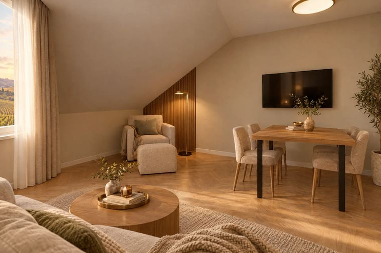
S3 · ranní kávaA
Žena s hrnkem kávy dojde k oknu s výhledem na vinici, protisvětlo, jen silueta.
a woman in a soft sweater walks slowly to the window holding a coffee cup, backlit silhouette, sunlight beams, apartment interior unchanged16:9 · 5 s · 80 kr
S4 · vířivkaC
Pár ve vířivce se sklenkami vína, záběr zezadu, bublinky, svíčky. Alternativa: žena pomalu plave v bazénu (bazén 1).
a couple relaxing in the hot tub seen from behind holding wine glasses, bubbles, candles flickering, calm, room unchanged16:9 · 5 s · 80 kr
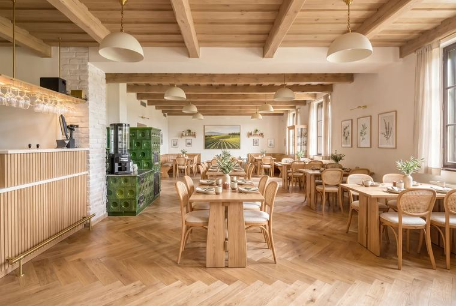
S5 · snídaněvolitelné
Obsluha nese kávu, hosté u stolů v neostrosti.
16:9 · 5 s · 80 kr
S6 · klika na kódvolitelné
Detail ruky, která zadá kód na klice a otevře apartmán. Obraz pro „užívat kdykoli“.
16:9 · 5 s · 80 kr
09 · Přechody a efekty
Co se k tomuhle druhu videa hodí
Učebnu nemám v tomhle prostředí k dispozici, proto jsou to moje návrhy. Pošli názvy efektů z učebny a namapuju je na tyhle místa.
Efekt
Kde
Jak
Pixelová mozaika SKUTEČNÝ STAV → VIZUALIZACE
B, fasáda a dron
na drop hudby, jako u Splavů
Proměna se stojící kamerou
B, P1–P5
Kling start/end
Průchod dveřmi, průlet oknem
A, P6; C, obývák → vinice
Kling start/end
FPV průlet dovnitř
A, C
poslední snímek FPV jako start, vizualizace jako end
Kreslený obrys pozemku + okolí do ČB
A, B
planární tracking dronu, styl jako fotky na webu
Text za objektem (za střechou, za cypřiši)
A „VLASTNIT“, háčky
maska z hloubky nebo rotoskop
Whip pan, rozmazaný střih
mezi drony a FPV
na doby
Střih podle tvaru
A: hladina bazénu ↔ víno ve sklence; vířivka ↔ sklenka
přes dva Kling klipy
Stíračka popředím
dron míjí cypřiš nebo sloup pergoly
z tvých záběrů
Slider před a po
bannery B, mikroukázka ve videu
svislá linka přejíždí
Sezónní stíračka se štítkem
C, čtyři roční období
barevný štítek období
Speed ramp
FPV háčky
jen v reklamách, ne v hlavním filmu
10 · Tvoje drony a FPV
Dron, pozemek, POI a koláč
Vyznačení pozemku
Tři pozemky podle tebe: dům na rohu (budova A), za ním směrem k poli druhý dům (budova B, sem přijde wellness) a třetí pozemek jako cíp, který končí na druhém rohu, s jejich zahradou a loukou. Web to potvrzuje („Za budovou B se nachází prostorná zahrada“). Na tvém záběru nakreslím obrys, okolí stáhnu do ČB a přidám štítky Budova A, Budova B, Zahrada. Přesné hranice chci z katastru.
POI fotka a 3D koláč
POI (poi.py): resort s pozemkem a štítky Valtice 6 min, Lednice 6 min, Mikulov 18 min, Hraniční zámeček, rybníky, Pálava a body, které mi označíš na timeline. 3D koláč (mapa-3d-okoli) s časy autem a nájezdem z Brna, Vídně a Bratislavy. Barvy dronů: platí tvoje.
11 · Všechny velikosti
Bannery
Každý koncept ve dvou vizuálech, ať v testu dál vidíme, co dělá obraz. Styl webu (Poppins, olivová, teplá bílá), na fotce musí být vidět dům, ne obloha, žádná půlka černá. U vizualizací štítek VIZUALIZACE.
obrázky pro 9:16 a zarovnání dělám zdarma (ChatGPT, nano banana)
~746 kr
+272,5
Kling se do tvých 300 vejde (281 kr základ). Seedance 1080p je dražší, než jsi počítal: za 300 kr jsou to jen tři 5s klipy. Proto návrh S1–S4 za 320 kr + test. Levnější varianta: Seedance 2.0 v 1080p (12 kr/s, pět klipů za 300 kr), nebo 2.5 v 720p s upscalem.
13 · Pořadí a brány
Postup
Podklady: web, ceník, správa pronájmu, půdorysy, TEST4, fotky současného stavuhotovo
Tvoje upravené fotky (i na výšku), drony a FPV na timeline s markery lokalitčekám
Střih videa na Sreality (16:9, s komentářem) a svislého masteru 9:16 na hudbu, karty „sem přijde AI“Franta
Kling a Seedance podle schváleného seznamu, převod na 25p„generuj“ + kredity
Titulky, štítky, obrys pozemku, POI, 3D koláč, karta s kontaktemFranta
Čistý master → reklamy A, B, C × 16:9, 9:16, 1:1Franta
Bannery ve všech velikostechFranta
Předání: složka s videem na Sreality, reklamami a bannery (bez webu a mikrosajtu)Franta
Spuštění testu ABC na 7 dní, report každé pondělíRentia
14 · Potřebuju od tebe
Otázky
Cena „od“. Nejlevnější A.11 za 2 818 750 Kč je na webu v ústní rezervaci. Psát „od 2,8 mil. Kč“ (jako web), nebo od nejlevnější volné B.22 za 3 258 750 Kč?
Crowdfunding. Smí v reklamě být „6 % p.a.“ a „zástava na apartmánu“? Kdo texty B schválí (Rentia, myRENTIA, advokátka)? A je pravda, že crowdfunding financuje právě tuhle přestavbu, ať to můžu napsat?
Současný stav uvnitř. Bazén a restaurace mají perfektní dvojice pro proměnu (P1–P3). Použít v B, nebo jen exteriér?
Bannery 01 a 04 z TEST4. Pošli je, ať stavím na vítězných vizuálech.
Efekty z učebny. Názvy nebo odkaz, ať použiju přesně ty.
Zvuk. Hlas (ElevenLabs Pohádkář jako u Splavů), nebo jen titulky a hudba? Odkud hudba?
Hranice pozemku. Čísla parcel (Hlohovec č. p. 228?), nebo ti obrys nakreslím na snímek a opravíš ho.
Vyhlídka s kioskem ve vinicích patří Usedlosti. Je součástí projektu? Dát ji do POI?
Rozpočet na reklamu a délka testu. TEST4 jel ~1 170 Kč denně. Stejně, tedy ~400 Kč na koncept?
Lidé v Seedance. Páry 35–55 stačí, nebo chceš i rodinu s dětmi (hřiště)?
BLACK standard. Na webu vidím jen světlé vizualizace. Existují i tmavé BLACK?
Wellness. V půdorysech 2025 je wellness A.28 v budově A, web i ty říkáte budova B. Beru budovu B.
Zdroje: resortvinohrady.cz (stav 23. 11. 2026, ceník a texty z prezentace), PDF Resort Vinohrady: správa pronájmu, usedlostpodvinohrady.cz, report Meta Ads TEST4, půdorysy Penzion A/B a Rozdělení na BJ (Hlohovec 228, 2025). Vizualizace jsou z webu projektu, náhledy jsou zmenšené.